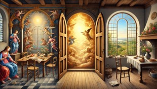
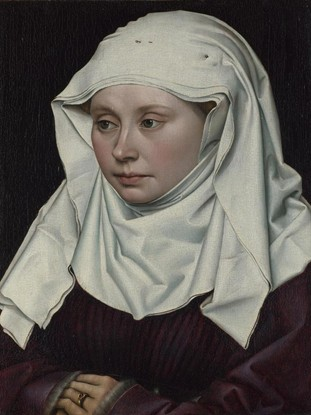
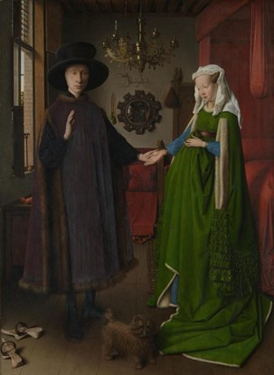

NHỮNG CUỘC CÁCH TÂN Ở BẮC ÂU
Soeur Wendy Beckett
NHỮNG CUỘC CÁCH TÂN Ở BẮC ÂU
Ở thế kỷ 15, phong cách gothic quốc tế phát triển theo hai hướng, cả hai đều đáng gọi là cách mạng. Một chiều hướng ra đời ở miền Nam, Florence, và là nguồn gốc của thời đại Phục hưng ở Ý. Chiều hướng kia diễn ra ở phương Bắc, Hòa lan, nơi hội họa chịu một cuộc biến đổi độc lập nhưng cũng rất cơ bản, cuộc biến đổi đánh dấu bước đầu của thời Phục hưng ở Bắc Âu.
Phong cách hội họa mới, xuất hiện ở Hà Lan đầu thế kỷ 15, được phân
biệt nhờ sự sâu sắc theo tinh thần hiện thực của hội họa cho tới lúc
đó chưa từng có, và bởi sự từ chối đi theo vẻ thanh lịch quyến rũ và
lối trang trí rực rỡ của phong cách gothic quốc tế. Trong lúc hội
họa tôn giáo của thế kỷ 14 tìm cách cho người xem một cái nhìn tổng
quát về thiên đường - bằng cách mở hé những cánh cửa, có thể nói như
thế - thì các họa sĩ xứ Flandre hạ cái thiêng liêng xuống cuộc đời
thực tế. Thay vì mô tả có vẻ như sân khấu những hoạt cảnh mà người
ta thường làm tranh nền, các nghệ sĩ thích thể hiện cảnh trong nhà
mà các gian phòng chứa những vật thường dùng hàng ngày. Thế giới có
vẻ hòa dịu di, và người ta tìm lại được sự thanh bình trong tác phẩm
của các họa sĩ Bắc Âu. Robert Campin (hoạt động khoảng thời gian
1406 tới 1444), một trong những nhà cải cách lớn của Bắc Âu và là
thầy của Van der Weyden, ngày nay được xác định là nghệ sĩ khuyết
danh đã vẽ hai tấm tranh trong bộ tranh ba tấm ở lâu dài
Flémalle-lez-Liège, theo một giả thuyết nếu không được thừa nhận thì
ít nhất cũng có vẻ đúng. Thực tế là Campin sống và vẽ ở Tournai, mà
Flémalle và Tournai đều ở trong tỉnh Flandre.

Sự đối lập giữa thiên đường thần thánh và cuộc sống thực tế theo
phong cách hội họa xứ Flandre (Ảnh Chat GPT)
ĐEM CÁI THIÊNG LIÊNG VÀO CUỘC SỐNG HÀNG NGÀY
Bức Giáng sinh của Campin không có chút xíu lý tưởng hóa nào: các
nhân vật đều có tầm vóc con người và quang cảnh chỉ phản ánh những
bộ mặt của cuộc sống hàng ngày. Họa sĩ cho thấy một Chúa Christ sơ
sinh ốm yếu, một bà đỡ quàu quạu, những mục tử thô lỗ và một con bò
trong cái chuồng gãy nát. Tuy vậy, cảnh tượng thực tế quen thuộc làm
chúng ta thích thú này thấm đẫm một lòng tin sâu sắc và đơn giản.
Bức Đức Mẹ với bức mành liễu, cũng của Campin, còn có ấn tượng mạnh
hơn, trong đó sự sinh hoạt tự nhiên hàng ngày được làm nổi bật bằng
tấm mành che lửa, nó làm thành vầng sáng sau Đức Mẹ. Theo truyền
thống, phong cách gothic quốc tế chỉ tính thần thánh thiêng liêng
bằng vầng hào quang vàng ánh.
Trong góc trên bên trái bức tranh diễn ra cảnh thành phố nhìn qua
cửa sổ. Ta thường thấy những tranh phong cảnh khổ nhỏ tương tự trong
hội họa Flandre, và các họa sĩ Ý sau này sẽ dùng lại kỹ thuật đó:
một phong cảnh đóng khung trong một cửa sổ.
Thế là cái tinh thần và cái vật chất dã thống nhất, vì bối cảnh đó
là thế giới riêng của Campin, cảnh nội thất. Khi cái thiêng liêng và
cái thường tục đã được phối hợp thì hội họa tượng hình có thể biểu
hiện cái không sờ mó được. Sự chú ý tỉ mỉ tới những vật tầm thường
cho chúng một giá trị thần bí tiềm tàng. Một bức màn bí ẩn phơ phất
quanh cảnh tượng và làm cho cái thường ngày trở thành lạ thường và
hiện diện một cách tuyệt diệu, và điều đó cũng được áp dụng cho
tranh chân dung.
Từ Thượng Cổ cho tới lúc đó, tranh chân dung như chúng ta quan niệm
ngày nay thật ra chưa hề có. Những tranh "chân dung" được vẽ với mục
đích cụ thể, để nhắc nhở một sự kiện, chẳng hạn Robert Campin là
người đầu tiên quan sát người đồng thời bằng cái nhìn lạnh lùng của
họa sĩ, bằng cách phát hiện cá tính tâm lý của đối tượng. Bức Chân
dung thiếu phụ (hình 8) - nét mặt biểu cảm, ánh mắt dò hỏi và chiếc
khăn đội giản dị - cho thấy ông là bậc thầy sử dụng ánh sáng. Họa sĩ
biết cách lôi kéo sự chú ý vào cái mà ông muốn chúng ta nhìn. Bức
chân dung này là một thí dụ rất hay của phong cách mới trong hội họa
xứ Flandre, nền hội họa bắt đầu biểu lộ cá tính của đối tượng hơn là
vẻ ngoài đơn giản. Campin đdã nghĩ ra được cách diễn tả nét mặt mà
Vander Weyden sẽ dùng lại.

Robert Campin Chân dung thiếu phụ (Portrait of a Woman), khoảng
năm 1435, 40,6 x 28,1 cm, London, Anh
Trong bức Đức Mẹ và Chúa Hài Đồng với các thánh trong một khu vườn
kín, một môn đồ của Campin cũng chứng tỏ được sự tin tưởng vững chắc
như thầy mình trong bức Giáng sinh. Khu vườn tượng trưng cho vườn
Địa đàng. Vườn được bao bọc bằng các bức tường hay một hàng rào là
biểu tượng truyền thống của sự trinh bạch của bà Marie.
TINH THẦN HIỆN THỰC MỚI
Phong cách gạt bỏ hết mọi ý đồ tô điểm đó đạt tới đỉnh cao với Jan
Van Eyck (khoảng 1390-1441), người đồng thời với Campin và có ảnh
hưởng lớn tới thời đại của mình. Ông có cái nhìn sắc bén, say mê và
soi mói đối với mọi chi tiết nhỏ nhặt của hoàn cảnh xung quanh,
không chỉ ở thực tế cụ thể mà còn ở cả giá trị mà nó phát hiện. Bối
cảnh tự nhiên của Van Eyck ngập tràn ánh sáng chói lòa, ông nhìn
những vật bình thường nhất với sự nhạy bén tuyệt vời và ý thức rõ về
cái đẹp thật sự của nó.
Như Vermeer, họa sĩ Hà Lan ở thế kỷ 17, Van Eyck vừa lôi cuốn chúng
ta về phía ánh sáng vừa cho chúng ta cảm giác chúng ta cũng là một
phần của ánh sáng. Bức Con trừu thần bí với những chi tiết tỉ mỉ là
một phần của bức tranh lớn dựng trên bàn thờ, vẽ trên hai mặt, bức
tranh lớn nhất và phức tạp nhất ở Hà Lan vào thế kỷ 15. Tác phẩm đồ
sộ này vẫn luôn luôn nằm ở chỗ dành cho nó lúc đầu: Nhà thờ Saint
Bavo (thành phố Ghent, Bỉ hiện nay). Nó mời gọi tín đồ dấn mình vào
giữa một thế giới mà nó làm cho sáng tỏ. Đã có nhiều cuộc tranh luận
để xác định xem phần lớn bức tranh bàn thờ ở Ghent do Van Eyck vẽ
hay do người anh là Hubert vẽ. Chúng ta không biết gì về người anh
em này, ngoài câu ghi chú này: "Họa sĩ Hubert Eyck, mà không ai sánh
kịp, đã bắt đầu tác phẩm này mà em của ông là Jan, là người thua kém
về mặt hội họa, đã hoàn tất theo yêu cầu của Jo Doc "
Bức tranh hình dung con Cừu hiến sinh đứng trên một bàn thờ, máu của
nó chảy vào một cái bát. Các thiên thần vây quanh bàn thờ, mang
thánh giá, biểu tượng sự hy sinh của Chúa, và ở tiền cảnh có mạch
nước Sự sống đang phun. Tín đồ tiến lại từ mọi phía, một đám đông
các nhà tiên tri. người tuẫn đạo, giáo hoàng, thiếu nữ đồng trinh,
người hành hương, hiệp sĩ và nhà ẩn tu. Như nhiều tác giả vẽ tranh
tôn giáo thời đó, rất có thế Van Byck cũng được một nhà thần học làm
cố vấn, và những hình ảnh đó tượng trưng cho tôn ti trật tự của Giáo
hội. Giữa lòng một phong cảnh xinh tươi, thành phố thiêng liêng -
giống như một thành phố Hà Lan - lấp lánh ở chân trời; nhà thờ ở bên
phải có lẽ là nhà thờ Utrecht. Cảnh này chỉ là một chi tiết của bức
họa trên bàn thờ, nhưng sự hoàn chỉnh và chính xác của nó, sức khơi
gợi của nó giải thích tại sao hình tượng thần bí này có ấn tượng
mạnh với người xem. Bức tranh Trên bàn thờ ở Gand chỉ mời mọc người
ta trầm tư mặc tưởng, mọi sự phân tích đòi hỏi cố gắng trí tuệ rất
nhiều. Chúng ta "di chuyển" tới một bức tranh nhỏ như bức Truyền tin
thì dễ hơn.
TÍNH TƯỢNG TRƯNG CỦA ÁNH SÁNG THEO VAN EYCK
Khi nhìn bức Truyền tin, chúng ta thấy như có luồng ánh sáng chói
lọi ấm áp xuyên qua, nó tỏa sáng khắp nơi, từ trần nhà thờ cho tới
các món châu báu của thiên thần. Tác dụng của ánh sáng đó là một thứ
gì có mặt để hài hòa và làm sống động những yếu tố của bức tranh. Đó
cũng là một thứ ánh sáng tinh thần đến từ Thượng đế, Người ban phát
rộng rãi lòng thương yêu cho mọi thứ Người tạo ra.
Tính tượng trưng còn rõ ràng hơn nữa: nóc nhà thờ chìm trong bóng
tối, và, trên cánh cửa sổ đơn lẻ, hình ảnh của Đức Chúa Cha nổi bật
lên. Ở phía dưới, có ba cửa sổ được soi sáng một thứ ánh sáng dịu
dàng, nhắc nhở Chúa Ba Ngôi và làm chúng ta nhớ rằng Chúa Jesus là
ánh sáng của thế gian. Thứ ánh sáng thần thánh đó dường như thoát ra
mọi hướng, nhưng các tia sáng trở thành cụ thể khi chúng chiếu tới
Đức Mẹ trong khi Đức Thánh thần lấy bóng che phủ bà: từ cái bóng
thiêng đ, ánh sáng thần thánh dâng lên. Đức Mẹ đáp lại lời chào của
Thiên thần "Chào Đức Bà đầy ơn phước" bằng cầu khiêm tốn "Tôi là tôi
tớ của Chúa". Với ý thức thực tiễn thú vị, Van Eyck viết câu đó lộn
ngược và nghịch đảo để cho Đức Thánh thần có thể đọc được. Thiên
thần thì rất vui vẻ, tươi cười, rạng rỡ. Đức Mẹ thì đăm chiêu, xúc
động và không đeo một món châu báu nào. Bà biết - điều mà thiên thần
có vẻ không biết - ý muốn của Chúa sẽ buộc bà chịu dựng như thế nào.
Tim bà sẽ tan nát vì đau đớn khi con bà bị đóng đinh, và bà đưa tay
lên trong một cử chỉ sùng kính, nhưng cũng như thể bà đã chịu đựng
trước khổ nạn của Chúa Jesus.
Trên chỗ Thiên thần đứng, chúng ta thấy David giết chết Goliath
(Goliath tượng trưng cho sức mạnh của Ma quý cuối cùng bị đánh bại).
Thông điệp của Thiên thần mang tới đã dẫn dắt Đức Mẹ trên con đường
đi gặp người khổng lồ mà bà phải đối đầu.
MỘT CHẤT PHA MÀU MỚI: SƠN DẦU
Anh em Van Eyck đã khởi sự bằng nghề trang trí sách. Những chi tiết
tuyệt mỹ thường rất nhỏ trong tranh của Van Eyck, như bức Truyền
tin, cho thấy một thị hiếu chắc chắn đối với hình thức nghệ thuật
này. Cái phân biệt chúng với những hình trang trí sách khác là sự sử
dụng hoàn toàn có tính cách tân chất pha màu.
Trong một thời gian dài, người ta đã gán một cách sai lầm việc phát
minh tranh sơn dầu cho Van Eyck. Thật ra, người ta đã dùng sơn dầu
để sơn tượng điêu khắc và để tráng một lớp mỏng trên tranh thủy hồ
(màu keo). Sự vẻ vang thật sự của Van Eyck là sau nhiều lần thử
nghiệm, ông đã thực hiện được một thứ véc ni bền vững và khô đúng
lúc có gốc dầu lanh và dầu hạt được trộn với nhựa cây.
Jan Van Eyck (hay Hubert?) đã phát hiện được điều này khi trộn dầu
với các sắc tố thay cho chất pha màu bằng lòng trắng trứng để làm
chất kết dính của màu keo. Kết quả là chất mới cho vẻ sáng sủa,
trong suốt và màu sắc có vẻ đậm đà vì sắc tố lơ lửng trong một lớp
dầu phản chiếu ánh sáng. Màu thủy hồ mờ xỉn và không nổi được biến
thành một chất pha óng ánh, rất tốt để thể hiện châu báu và quý kim
và nhất là để vẽ ánh sáng chói trung thực của ánh sáng tự nhiên.
Chất pha màu mới trong suốt đó cho phép Van Eyck tái tạo tính chân
xác của thực tế với một kỹ thuật tài tình, nó cũng thể hiện những
quan sát tuyệt vời của ông đối với ánh sáng và tác dụng của ánh
sáng. Việc phát minh kỹ thuật này đã làm thay đổi bộ mặt của hội
họa.
CHÂN DUNG MỘT ĐÁM CƯỚI

Jan Van Eyck, Vợ chồng Arnolfini (The Arnolfini Portrait), năm
1434, 82,2 x 40 cm, London, Anh
Vợ chồng Arnolfini (hình 9) của Van Eyck là tên được đặt sau cho bức
chân dung đôi lúc dầu không có nhan đề (hiện nay đang nằm ở National
Gallery, Luân đôn). Đây là một trong những sự biểu dương lớn nhất
của tình vợ chồng. Giống như bức Cô dâu Do Thái của Rembrandt, bức
tranh này cho ta thấy ý nghĩa sâu sắc của một cuộc hôn nhân chân
thực.
Chiếc giường, ngọn nến cháy duy nhất, khoảnh khắc trang trọng của sự
kết hợp khi người chồng mới đặt tay vào tay của người vợ yêu dấu,
trái cây, con chó nhỏ trung thành, tràng hạt, chân không mang giày
(mặt đất tượng trưng sự kết hợp có tính thiêng liêng), và ngay cả
khoảng cách khá xa để giữ sự kính cẩn giữa Giovanni Arnolfini và
người vợ, Giovanna Cenami, tất cả khung cảnh đó đều phản chiếu trong
chiếc gương. Tất cả những chi tiết đó được thể hiện với sự quan tâm
sao cho thật đúng, và mỗi chi tiết có thể được giải thích như một
biểu tượng.
NGỌN ĐÈN TƯỢNG TRƯNG
Ngọn đèn duy nhất cháy giữa ban ngày có thể giải thích là ngọn đèn
tân hơn (hoa chúc), hay con mắt của Chúa nhìn thấy hết, hay đơn giản
là một ngọn nến. Một biểu tượng khác là nữ thánh Marguerite (thánh
bảo hộ của sản phụ) mà hình ảnh được chạm trên đầu ghế tựa.
CHỮ KÝ CÔNG PHU
Các đám cưới ở Flandre vào thế kỷ 15 có thể tổ chức ở nhà chớ không
phải ở nhà thờ. Chữ ký bằng tiếng La tinh của Van Eyck theo kiểu chữ
gothic của văn kiện luật pháp - Johannes de Eyck fuit hic (Jan Van
Eyck đã có một tại đây) - làm ta nghĩ tới một số lời chỉ trích mà
bản thân họa sĩ là nhân chứng.
CHIẾC GƯƠNG LỒI
Chiếc gương được vẽ một cách tỉ ml tuyệt vời. Những huy hiệu nhỏ mô
tả những đoạn đời của Christ được khảm trong khung gương có chạm
trở. Ảnh phán chiếu khung cảnh trong gương còn đáng chú ý hơn: ảnh
cho thấy bóng của họa sĩ với một người khác, có lẽ là nhân chứng
chính thức của hôn lẽ.
BIỂU TƯỢNG TRUNG THÀNH
Gần như mỗi chi tiết có thể được giải thích như một biểu tượng. Con
chó nhỏ là biểu tượng của lòng trung thành và của tình yêu. Trái cây
trên bệ cửa có lẽ tượng trưng cho sự phong phú và việc bị đuổi khỏi
thiên đường. Ngay những đôi giày cũng không được bỏ đó một cách ngẫu
nhiên, mà chỉ tính chất thiêng liêng của hôn nhân.
SỰ TIẾN TRIỂN CỦA CHỦ NGHĨA TỰ NHIÊN
Tinh thần hiện thực mới của Hà Lan đã bắt đầu phát triển ở thế kỷ 15
và khoảng năm 1450 thì ảnh hưởng của nó đã lan khắp Bắc Âu tới tận
Tây Ban Nha và vùng Baltique. Bức Pietà, do một nghệ sĩ vô danh ở
Avignon vẽ, nền vàng ánh không hình nổi của phong cách Byzance và
gothic nguyên thủy. Toàn bộ sự chú ý của chúng ta hướng về sự trầm
mặc gây ra do cái chết của Chúa Jesus. Quang cảnh đó không diễn ra
trên mặt đất mà là ở trong lòng của người cung tiến đang quỳ cầu
nguyện ở bên trái. Ấn tượng của bức tranh tuyệt vời này chỉ có những
cảnh khổ nạn của Bosch mới so sánh nổi. Ở đây chúng ta nhận thấy
rằng thời kỳ gothic là thời kỳ mà người ta để cho cảm xúc tự do biểu
lộ, nước mắt được chấp nhận là sự biểu lộ tự nhiên sự tổn thương của
chúng ta.
Petrus Christus (khoảng 1420-1472/73), một họa sĩ Flandre, cũng có
cái ý thức bí ẩn về cảm xúc chân thực đó. Ông là môn đồ của Van
Eyck: một phần lớn tranh của ông cho thấy ảnh hưởng của họa sư
Flandre đó, ngoài ra còn có ảnh hưởng của Antonello da Messina mà
ông biết rất rõ tác phẩm. Chính vì vậy mà Christus đã thụ động biến
cải một phần nào phong cách của Van Eyck theo kiểu Ý. Bức họa nhỏ
Con người đau khổ (hiện ở Birmingham, Anh) thể hiện Chúa Jesus bị
đóng đinh, mang vòng gai và chỉ những vết thương của mình, hai bên
có hai thiên thần, một người cầm một hoa huệ và người kia cẩm gươm,
những biểu tượng của sự vô tội và tội lỗi. Đó là sự Phán xét cuối
cùng mà mỗi con người phải đối đầu với người phán xét mình.
Người xem bị thu hút bởi cảnh đó, không thể thoát khỏi thực tế và ý
nghĩa của khổ nạn.
ẢNH HƯỞNG CỦA VAN DER WEYDEN
Rogier Van der Weyden (1399/1400-1464) là một người khổng lồ khác
của truyền thống hội họa Bắc Âu. Học trò của Van Eyck và Campin, ông
trở thành họa sĩ Bắc Âu lỗi lạc nhất nửa đầu thế kỷ 15. Ông bắt đầu
sự nghiệp tương đối trẻ (khoảng 30 tuổi), điều đó không ngăn được
ông thành công và điều khiển một xưởng vẽ quan trọng. Thành công của
ông ở triều đình của Philippe Le Bon, công tước Bourgogne, bảo đảm
cho phong cách của ông tồn tại lâu dài. Tranh của ông được mang đi
khắp châu Âu, và danh tiếng của ông vang dội.
Van der Weyden tỏ ra lão luyện trong nghệ thuật biểu lộ xúc cảm của
con người và làm chúng ta xúc động hơn Van Eyck. Thí dụ tuyệt vời
nhất có lẽ là bức Đem Chúa từ thánh giá xuống. Trong tác phẩm này,
tác giả diễn tả một cách thần tình sự thống thiết vô biên về việc
Chúa Jesus bị nhục hình và sự tuyệt vọng cùng cực của những người đi
theo Người. Không có họa sĩ nào khác tạo được ấn tượng bi thảm về
cảnh đó như Van der Weyden. Những người đàn bà thánh thiện và thân
hữu của Jesus chiếm hết không gian trong bức tranh. Chúa và Đức Mẹ
có tư thế nghiêng ngả như nhau. Chúa từ thập giá xuống, đã chết thật
sự, Đức Mẹ ngã xuống đất, ngất đi vì xúc động.
Van der Weyden khảo sát kỹ tất cả những mức độ đau khổ, từ sự thống
khổ trầm trọng mà được kiềm chế của Thánh Jean, bên trái mặc áo đỏ,
cho tới sự đau đớn không kiềm chế được của Marie Madeleine với bố
cục đỏ, vàng, tái nhợt và tím. Họa sĩ luồn luôn làm chủ cảm xúc. Tất
cả có vẻ đáng tin một cách hoàn hảo, và chúng ta bị lôi cuốn vào một
kinh nghiệm vừa đẹp tuyệt vời vừa khủng khiếp.
UY LỰC CỦA TRANH CHÂN DUNG
Cơ cấu bố cục của bức Đem Chúa từ thánh giá xuống, với không gian
hạn chế và số người đông đảo, đã dứt khoát loại bỏ cảnh nền nào có
thể làm người xem lơ đãng, cái nhìn của người xem tập trung vào hoạt
cảnh. Một tác phẩm khác của Van der Weyden, bức Chân dung Thiếu phụ
cũng cho thấy kỹ thuật đó. Ở đây, nền sẫm và trần trụi làm chúng ta
hoàn toàn chú ý tới người mẫu, mà với một thử dè dặt đau đớn, có vẻ
không chịu bộc lộ tâm tư. Tuy vậy, họa sĩ cũng nhìn thấu được gương
mặt có vẻ khó hiểu đó và làm cho chúng ta nhận ra được nhân cách sâu
kín của người mẫu. Quần áo giản dị, không trang sức, mắt nhìn xuống
chỉ rõ tính khiêm nhường. Đối với người quan sát hiện đại, vầng trán
có vẻ cao quá. Thật ra, theo kiểu cách thời đó, dường chân tóc chảy
ngược ra sau được tỉa rất cần thận.
Thiếu phụ có lẽ là Marie de Valengin, con gái của Công tước
Bourgogne, Philippe le Bon, nhưng lý lịch của nàng có vài tranh cãi.
NHỮNG TRANH KHỔ LỚN
Hugo Van der Goes (khoảng 1436-1482) đã vẽ những bức tranh rất lớn,
cả về khuôn khổ lẫn sự đồ sộ của các nhân vật. Tác phẩm nổi tiếng
nhất của ông, bức tranh ba tấm Sự chiêm bái của các mục tử hiện để
tại cung Offices ở Florence, phần đã gây ảnh hưởng lớn ở Ý khi bức
tranh còn được dùng trang hoàng nhà thờ của bệnh viện Santa Maria
Nuova ở Florence. Bức tranh do một chủ ngân hàng ở Florence, Tommaso
Portinari đặt vẽ, thể hiện sức mạnh của gia đình Médicis ở Flandre.
Bức tranh gồm ba tấm, rộng gần 6 thước, bắt chước theo khuôn khổ một
bức tranh thờ đã có trước đó ở Florence.
Van der Goes chết vì loạn trí, và do đó chúng ta có khuynh hướng
nhìn thấy trong tranh ông một tinh thần ưu tư bị giày vò. Nhưng, nếu
không biết chi tiết đó, chúng ta phải sửng sốt vì sức mạnh biểu hiện
ghê gớm của ông. Bức tranh giữa cũng như hai tấm bên cho thấy hai
mức độ kích thước, các thiên thần nhỏ bé một cách lạ lùng so với
những người khác trong tranh. Phương pháp đó rất phổ biến trong hội
họa thời trung cổ, nó cho phép xác định tức khắc những nhân vật quan
trọng.
CẢM XÚC TRONG SÁNG CỦA MEMLING
Cách nhìn của Van der Goes đặc biệt biểu cảm, kết hợp được cái trầm
trọng của Van Eyck với cảm xúc mạnh mẽ của Van der Weyden. Sức mạnh
biểu cảm đó thiếu vắng trong tác phẩm của các họa sĩ Flandre Gérard
David và Hans Memling. Memling (hay Memlinc) (khoảng 1433-1494) có
lẽ đã làm việc trong xưởng vẽ của Van der Weyden, nhưng cũng chịu
ảnh hưởng của Dierick Bouts, môn đồ của Van Eyck. Gốc người Đức,
Memling đã lập nghiệp ở Bruges (nay là một thành phố Bỉ); ông điều
khiển một xưởng vẽ quan trọng và trở thành một người nổi tiếng và
giàu có.
Memling là một họa sĩ trầm lặng, nhìn thế giới một cách kín đáo và
chia sẻ với chúng ta những điều ông quan sát được. Bức Người đàn ông
cầm mũi tên làm ta say mê ngay cái nhìn đầu tiên.
Người ta đã giải thích nhiều về mũi tên, nhưng người mẫu không có vẻ
một quân nhân vì nét mặt anh hiền hậu, dịu dàng. Chúng ta thấy đây
là một nhân vật có vẻ bình thản, nhưng miệng anh biểu lộ ý chí và
nhục cảm. Càng ngắm bức tranh nhỏ này, người ta càng bị nó thu hút.
Không còn bức tranh nào có thể tương phản mạnh mẽ hơn với tác phẩm
của Bosch, người đồng thời với Memling; trong tranh của Bosch là
những gương mặt bị méo mó vì mối hận thù bị kiểm chế.
MỘT MÔN ĐỒ CỦA VAN DER WEYDEN
Trong tất cả họa sĩ Flandre, chính Van der Weyden là người gây được
ảnh hưởng lớn nhất với Dierick Bouts, người sinh ở Hà Lan (khoảng
1415-1475). Bouts hoàn thành phần lớn tác phẩm của mình ở Flandre,
nơi ông được bổ nhiệm làm họa sĩ chính thức của thành phố Louvain
năm 1468.
Tranh của ông nổi bật ở tính cách trang trọng và tình cảm tôn giáo
sâu đậm được biểu lộ ra. Bố cục điều độ và sự giản dị ở các nếp quần
áo của bức Chân dung một người đàn ông là những nét tiêu biểu của
ông. Bouts là một họa sĩ phong cảnh khéo léo và chúng ta nhận ra tài
năng đó của ông qua khung cửa sổ mở.